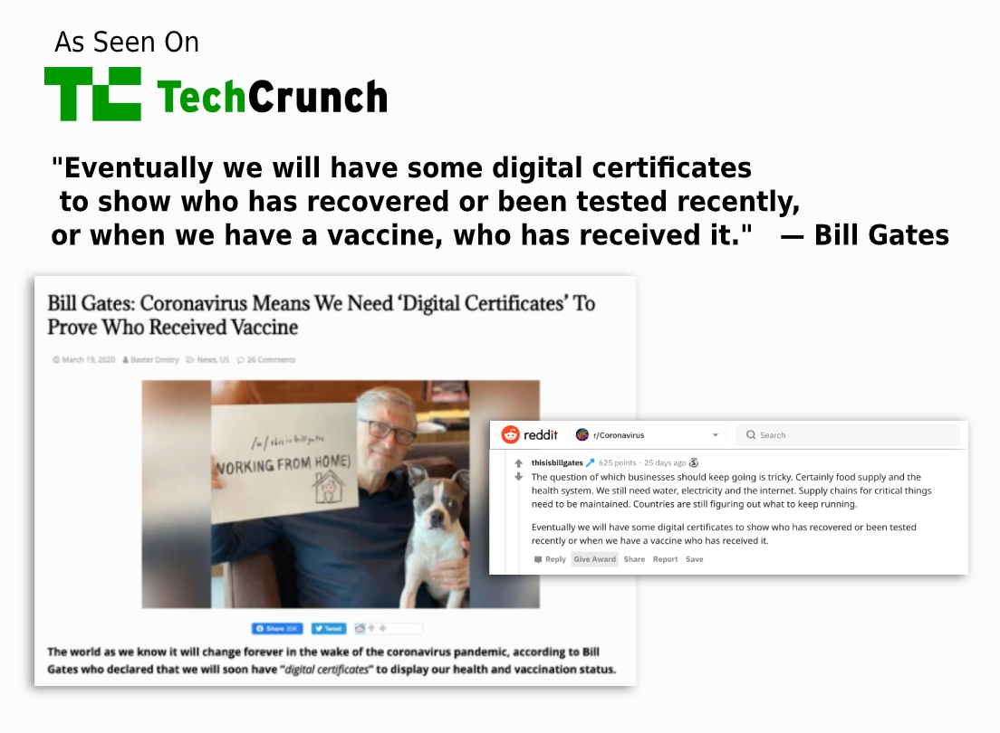

COVID-19 has changed the way we are currently living our lives and interact
with others around us. The world
is not going to be the same again, even when we recover from this pandemic. Today, each of us faces
life-or-death questions whenever we interact with people, places, or things. These trust issues have become
even more critical as the government announces lockdowns to be lifted, and life gradually starts to return
to normal.
The airports and airline industry will need to know who has been cleared to travel domestic or
international. Hospitals will need a way of knowing which medical professionals and visitors are safe to let
in. Companies will need to prevent further spread of virus once employees start returning to the office.
Informal trust is essential as a society. But it takes more than just goodwill, common sense, and manners
when a life-threatening pandemic surrounds us. Governed, digitally provable trust is required, as
both China
and South Korea have demonstrated in their countries. Moreover, Bill Gates also observed that: we will need
“digital certificates to show who has recovered or been tested recently or when we have a vaccine who has
received it.”
TrustNet Pakistan
Foundation
has started an open-source COVID-19
Initiative so we can use blockchain-based digital trust to solve some key problems that we are already
facing in Pakistan and are likely to occur
in the post-COVID world. TrustNet PK is already part of a global initiative called ‘COVID
Credentials
Initiative’ which is focused on fighting COVID-19 challenges using blockchain-based digital
credentials solutions. This initiative is joined by more than 60+ organizations all over the globe with
more than 200+ people involved.

Why You should Join TrustNet COVID-19 Initiative
It is pretty obvious that there will be a pre and post COVID world.
The
question is how we are going to
remember it. Will we remember it as locked at home and doing nothing about it or using our skills and
experties for
something bigger than ourselves and contributing back to society.
Using a blockchain-based digital identity trust framework, we can enable healthcare facilities, and
COVID-19
testing services all across Pakistan small clinics or big hospitals / labs, to start issuing
digitally-signed credentials to a
patient about their COVID-19 status
directly to their smartphones.
With a quick touchless scan of a QR code, that person can prove that he or she is virus-free or has been
vaccinated (once that is available). This special digital certificate can maintain the privacy and
confidentiality of people by having no personal information and still providing strong cryptographic
proof
that the credential belongs to that person.
Such a digital credential would be massively harder to fake or spoof than any paper or plastic
credential.
And it can be issued in seconds—and revoked in seconds if that individual’s COVID-19 status changes.
Moreover, its trust interoperability would be international, meaning a digital credential issued in
Pakistan
can be verified and trusted anywhere in the world.
It is extremely challenging for the digital infrastructure of our society to having integrations with every
commercial service in the eco-system and have national and international interoperability. We at TrustNet PK
have a solution for that using the most emerging technology.
The international organizations across the globe have proven the technology and the standards we are using.
Verifiable digital credential technology is already powering several vital projects, spanning government
(verifiable
public directories),
financial services (banks,
credit
unions,
FinTechs),
healthcare (doctor
onboarding), humanitarian services (portable identity for refugees, privacy-preserving HIV testing), and
many other sectors.
We hope you join us to build for humanity and Pakistan. The very least you can expect from this initiative
is blockchain learnings, working with a community of exceptional people, your personal open-source
contribution and perhaps your
effort could save someone's life.
Get involved with TrustNet COVID-19 Initiative
Help us build digital trust COVID-19 Solutions for Pakistan, by
joining us.
As a developer or architect you can join this initiative and contribute with your
technical experties in building COVID-19 blockchain-based digital
identity solution.
If you are an organization you can join our consortium and be involved in this initiative. Explore how it can
help your organization, your consumers and others interacting with your business. Write us an
email, let's talk.
As a health or governance expert you can join our initiative and help us bringing the
authentic needed solution around healthcare and governance framework.
In any case we recommend you join our Slack to
stay in touch for discussions, announcements
and if you join us then maybe take part in our Webinars, Workgroup Meetings or Consortium Meetings.
Why We Care?
Digital Trust plays a vital role in this pandamic and we believe Self-Sovereign
Identity can help.
Community
Rome wasn't built in a day.
Take part in building TrustNet PK Join our